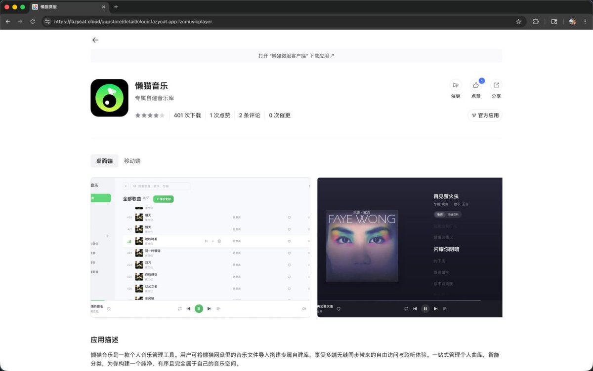

奶昔🥤
@realNyarime
@Harold_W_Chen 那你可要搜一下「懒猫微服」这个关键词，不过他家CEO新注册小号就把我b了，只能说好似

奶昔🥤
@realNyarime
这个蓝猫微服自己本就是抄袭者，随便点一个就知道这抄的谁😅
这个傻卵天天在推特碰瓷别人评论区打广告，私信轰炸卖他那个垃圾小主机，前段时间养🦞也是疯狂打广告
简单来说就是开源项目影响到王勇挣钱了，我把懒猫那个CEO屏蔽了，因为帖子几乎全是广告 https://t.co/5NMUprtTNq https://t.co/9zcoCXG0hO
Harold W. Chen (左尔文)
@Harold_W_Chen
@realNyarime 这个王勇到底做了啥，好像很多人不喜欢他，我想听听这个瓜。